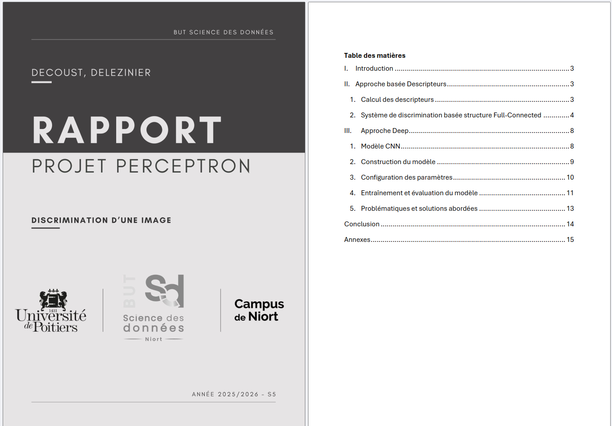

L'objectif de ce projet est de réaliser un système de dicrimination d'images réelles, soit un dispositif de classification.
À notre disposition, nous avions la base de données Wang, composée de 1 000 images réelles réparties en 10 catégories (Jungle, Plage, Monuments, Bus, Dinosaures, Éléphants, Fleurs, Chevaux, Montagne et Plats). L’objectif était de concevoir un système capable d’attribuer automatiquement la bonne classe à une image inconnue.
Pour ce projet, nous avons implémenté deux approches distinctes sous Keras et TensorFlow :
- Approche par Perceptron Multi-couches (MLP) : Ma mission a consisté à mettre en place un système de discrimination basé sur des descripteurs d'images.
Après la création d'un vecteur de labels, j'ai conçu un modèle séquentiel à 4 couches. Pour optimiser les performances, j'ai ajusté les hyperparamètres
(normalisation, Dropout et régularisation L2) afin de limiter le surapprentissage. L'analyse des résultats s'est appuyée sur l'étude des courbes d'accuracy et des
matrices de confusion.
- Approche par Réseau de Neurones Convolutifs (CNN) : En parallèle, ma binôme a développé une stratégie "Deep" où le modèle extrait lui-même les
caractéristiques des images via des couches de convolution et de pooling. Nous avons également exploré le Transfer Learning avec le modèle VGG16 pour
gagner en stabilité et en précision.
Pour rendre compte de nos résultats, nous avons rédigé un rapport détaillé décrivant chaque étape du projet, ainsi qu'une analyse critique des pistes d'amélioration pour que nos modèles soient plus performant.
- Qualité de la démarche
- Qualité de la restitution : l'analyse de nos résultats
- Apprendre à créer un modèle de classification d'image
- Apprendre à analyser ses résultats pour les améliorer
Ce projet m'a permis de commencer à comprendre comment fonctionne un modèle de classification et plus précisément de type réseau de neurones. De plus, il m'a permis de comprendre l'importance d'analyser les résultats afin d'améliorer le modèle pour une meilleure performance.
Voir le rapport